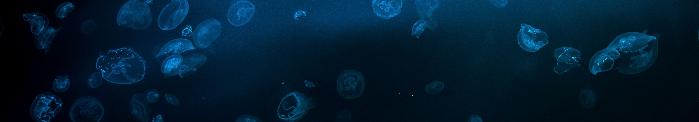
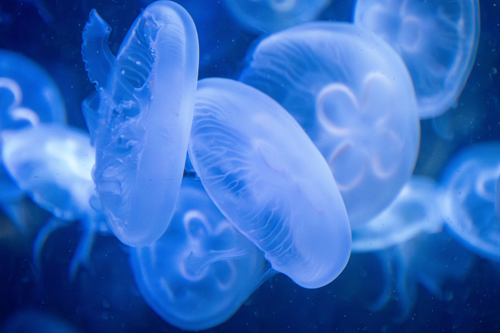

Jellyfish are soft-bodied animals that live in oceans around the world. They belong to a group of animals called cnidarians. Unlike fish, jellyfish do not have bones, scales, or fins. Their bodies are mostly made of a jelly-like substance called mesoglea. They have a bell-shaped body that helps them move through the water. Jellyfish use their tentacles to capture food and protect themselves. They do not have a brain like humans or other complex animals. Instead, they have a simple network of nerves that helps them respond to their surroundings. Jellyfish have existed in Earth's oceans for hundreds of millions of years. Their unusual bodies make them some of the most recognizable animals in the ocean.Jellyfish do not have a brain, heart, or bones, but they have a simple nervous system that helps them sense changes in their environment. They also absorb oxygen directly through their thin body instead of using lungs. Jellyfish come in many different sizes, shapes, and colors, with some species being nearly transparent and others displaying bright colors. Some jellyfish are small enough to fit in your hand, while other species can grow several feet across. Their simple bodies allow them to float and move efficiently through their underwater environments. Even though they may look fragile, jellyfish are highly adaptable animals that have survived in the oceans for an incredibly long time.
Jellyfish move through the water by contracting and relaxing their bell-shaped bodies. These movements push water away from their bodies and help propel them forward. However, many jellyfish rely heavily on ocean currents to travel long distances. Their swimming is generally slower than that of many fish. The shape and movement of the bell can vary between different species. Some jellyfish are able to control their direction more effectively than others. Their simple movement system works without bones or muscles like those found in humans. The nervous system helps coordinate contractions throughout the bell. Jellyfish can also change their position in the water by adjusting their movements. Their combination of swimming and drifting allows them to travel through large areas of the ocean.Their long tentacles move along with their bodies and can trail behind them as they swim. Some species can adjust their swimming movements to help control their position in the water, while others mostly drift with the current. This combination of pulsing movements and drifting allows jellyfish to travel through different parts of the ocean. Their unique way of moving is one of the reasons jellyfish are such interesting animals to study.